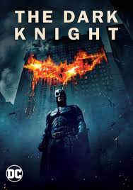

This movie is about a billionaire kid named Bruce Wayne who witnessed his parents die right in front of him. After this he realized that he does not want this to happen to anyone else ever again so he leaves the country and embarks on a journey to train himself and learn how to protect himself and others. He then went to the Himalayan mountains where he met a mysterious man by the name of Ras al Ghul who ran a organization called the "league of shadows" and they taught him how to get past the pain of his parents death and taught him how to defend himself and punish evil. Bruce later realized he did not agree with how extreme Ras's methods were since he wanted to execute criminals and Bruce thought nobody deserved to die, even criminals. Bruce then betrayed Ras, left his organization and went back to his home town to stop crime there and became a hero known as Batman who stops criminals.
This movie is about Bruce Wayne as Batman and he is working with the police department to take down a new criminal in town named "Joker". Batman has insired many people in the town including a man named Harvey Dent who is a lawyer running for District Attorney. Everyone in town is real impressed with him and Bruce considers walking away from being Batman because Harvey is being just as successful putting criminals away as Batman is. Joker realizes how influencial Harvey is and decides to "bring him down to his level" and make Harvey insane in order to prove a point to Batman that anyone could go bad with one bad day.
This movie is about Bruce Wayne after he retires from being Batman. He needs a cane to walk now from all the injuries he sustained from being Batman. He eventually sees on the news a man who named Bane who came to his city to destroy it for revenge on what Bruce did to his master, Ras Al Ghul. Bruce eventually realized that he needs to be Batman again one last time in order to stop him even if it costs him his life. He then got a knee brace his company develoved to fix his leg and he goes to stop his plans.